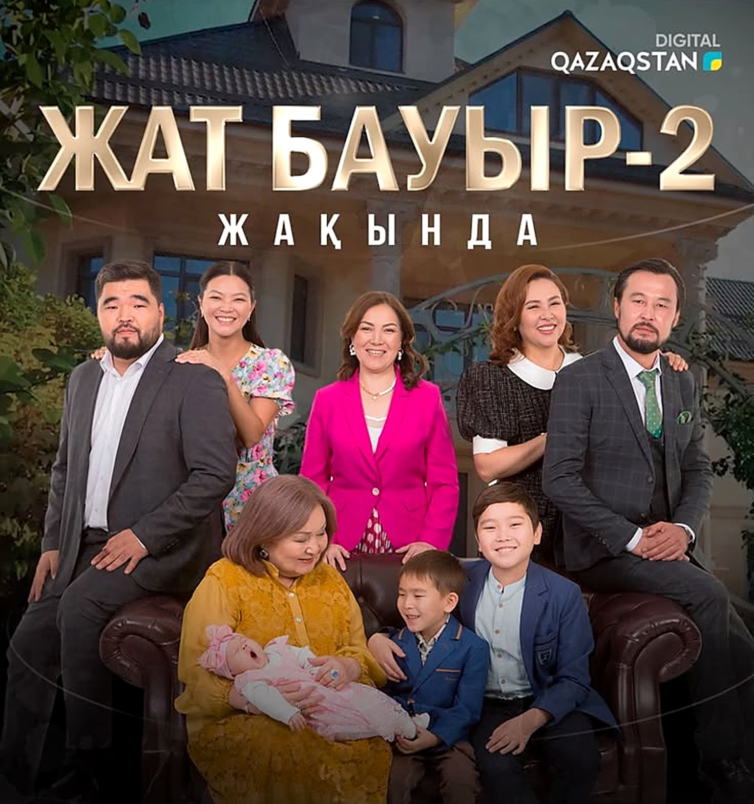
Режиссёр · Второй режиссёр
Мухамедбек Окаев
Снимаю казахстанские сериалы и кино. Режиссёр «Жат бауыр-2» и «Көршінің қызы», второй режиссёр на площадке с 2017 года.
22проекта в фильмографии
2сериала как режиссёр
2017второй режиссёр с этого года
Режиссура
Сериалы, которые я снял как режиссёр
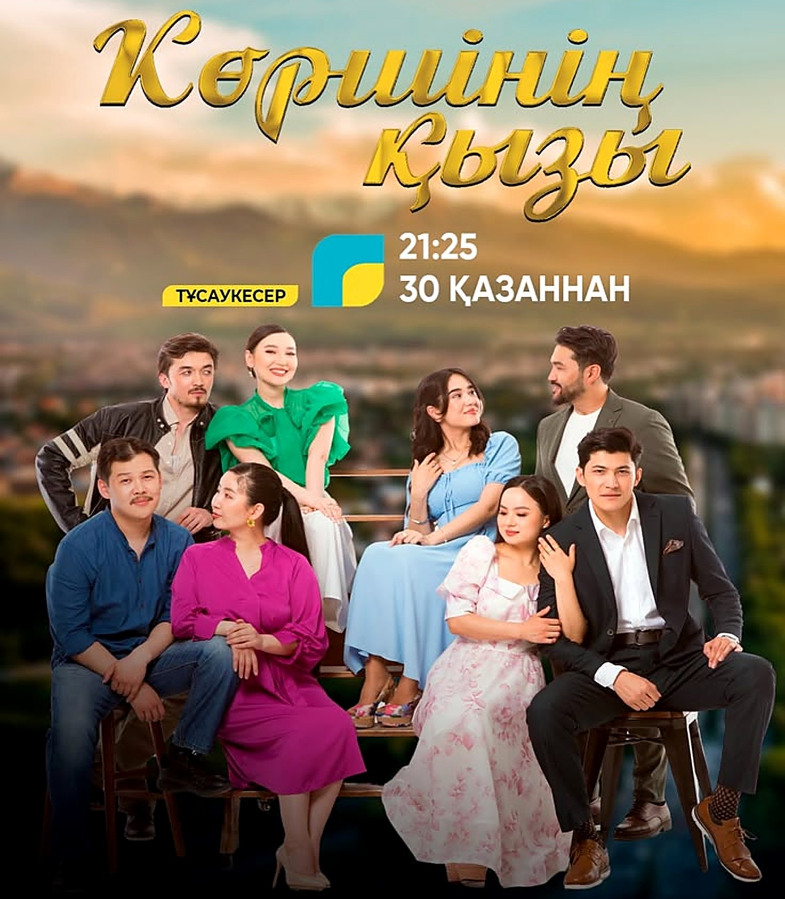
Второй режиссёр · с 2017
Фильмография второго режиссёра
Организую съёмочный день: план съёмок, массовка, тайминг площадки, чтобы режиссёр и группа работали над кадром, а не над хаосом.
Сериалы 10
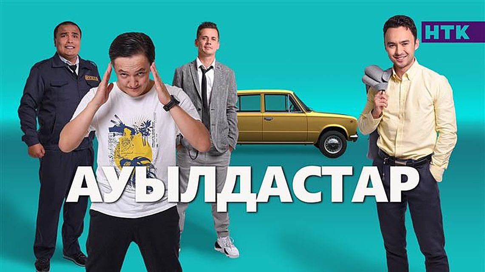
Ауылдастар3 сезон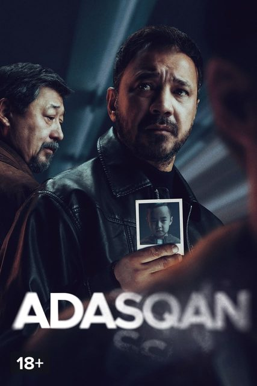
Адасқан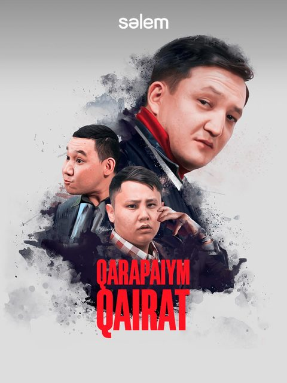
Қарапайым Қайрат2 сезон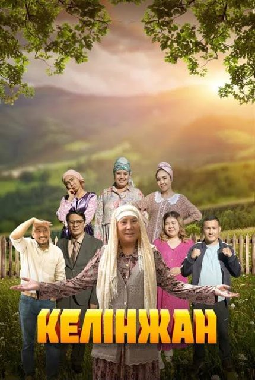
Келінжан3 сезон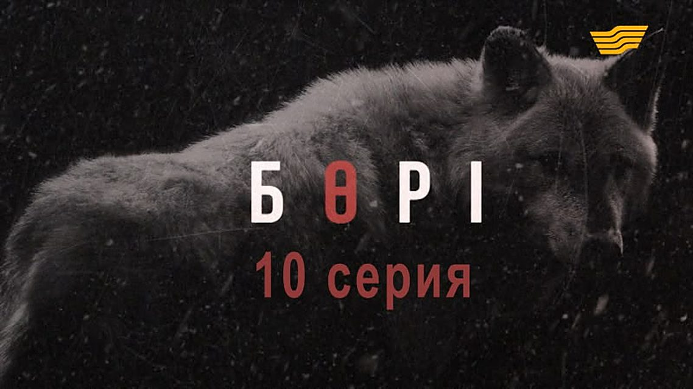
Бөрі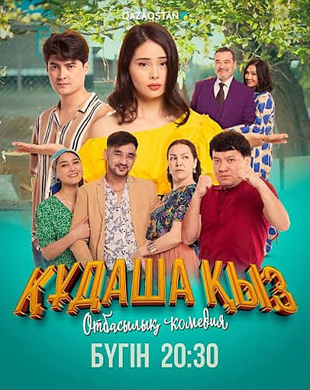
Құдаша қыз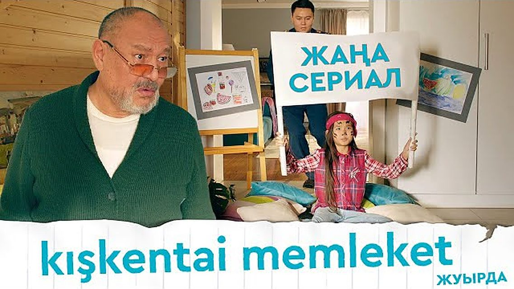
Кішкентай мемлекет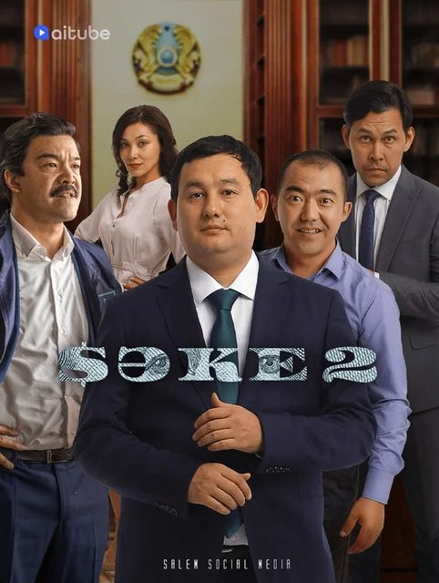
Сәке 2- Аким
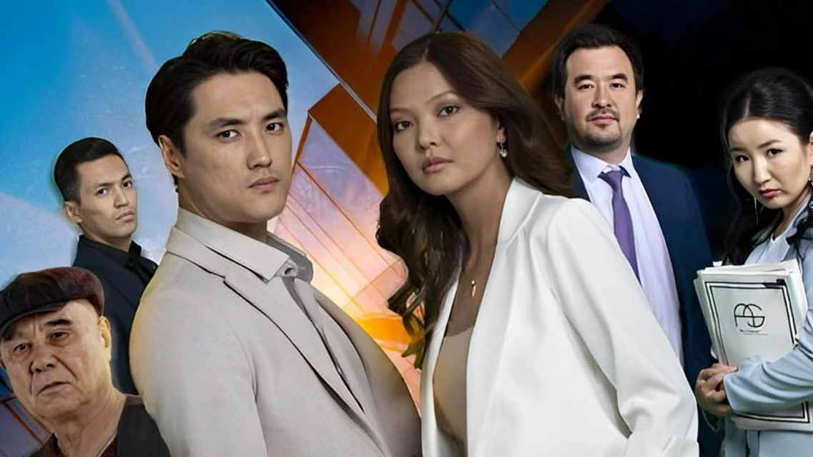
Қара таңба
Фильмы 10
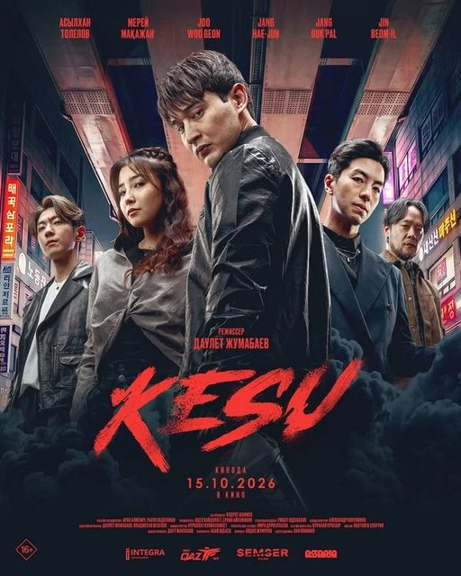
Кесу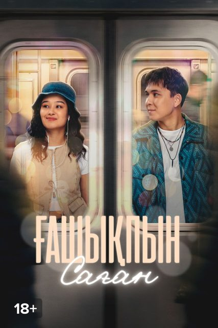
Ғашықпын саған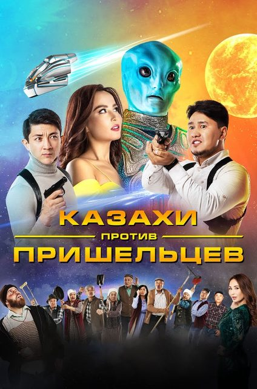
Казахи против пришельцев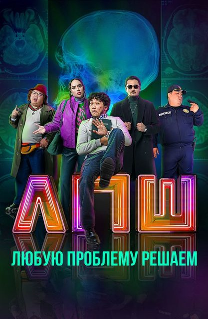
Любой проблема шешемізЛПШ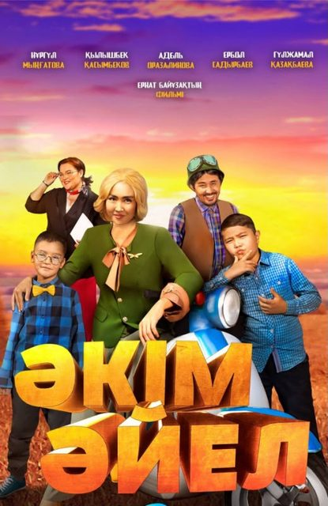
Әкім әйел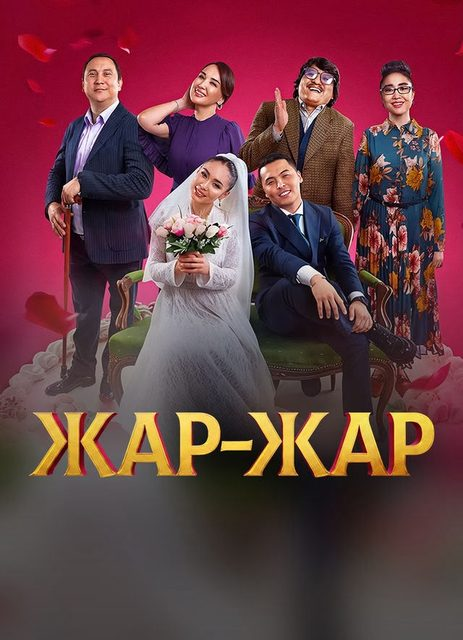
Жар-Жар- Тақия
- Жаным, ты не поверишь 2
- Начни с себя
- Ақжелең
Обо мне
Режиссёр, который знает площадку изнутри
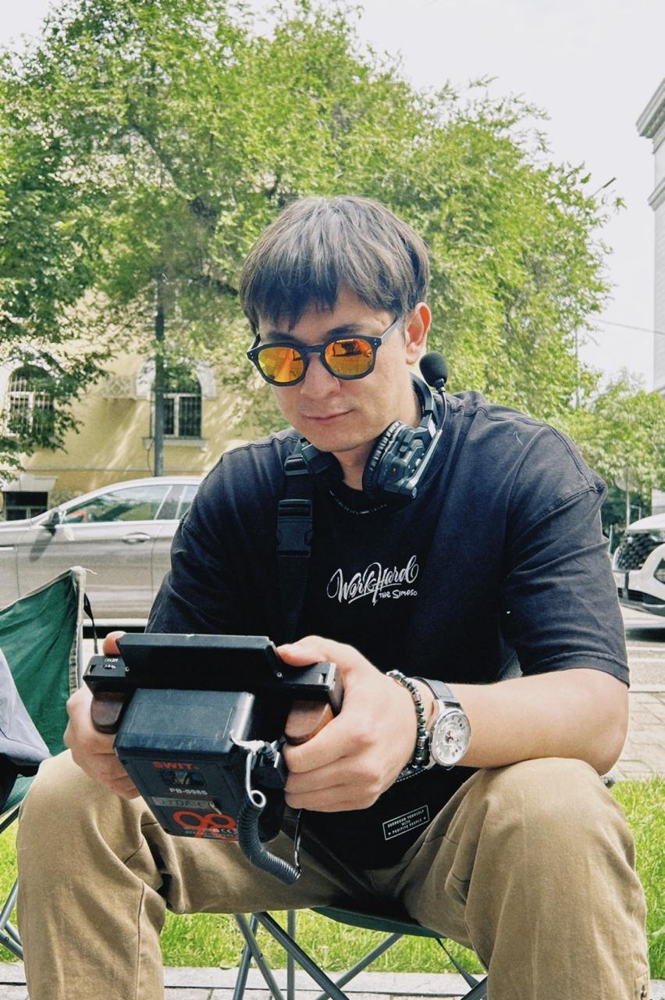
С 2017 года я второй режиссёр на сериалах и фильмах, а значит знаю, что кино делается в подготовке. Поэтому на «Жат бауыр-2» и «Көршінің қызы» группа получила режиссёра, который думает и о сцене, и о съёмочном дне.
- Образование
- Казахская национальная академия искусств им. Т. Жургенова, 2010–2015
- Специальность
- Режиссёр кино и телевидения
- Языки
- Казахский, русский, английский
- Режиссура
- «Жат бауыр-2» (2023), «Көршінің қызы» (2024)
- Второй режиссёр
- 10 сериалов и 10 фильмов с 2017 года
Контакты
Есть сценарий или съёмки на носу?
Напишите и расскажите о проекте: жанр, сроки, где снимаем.
+7 708 989 91 51